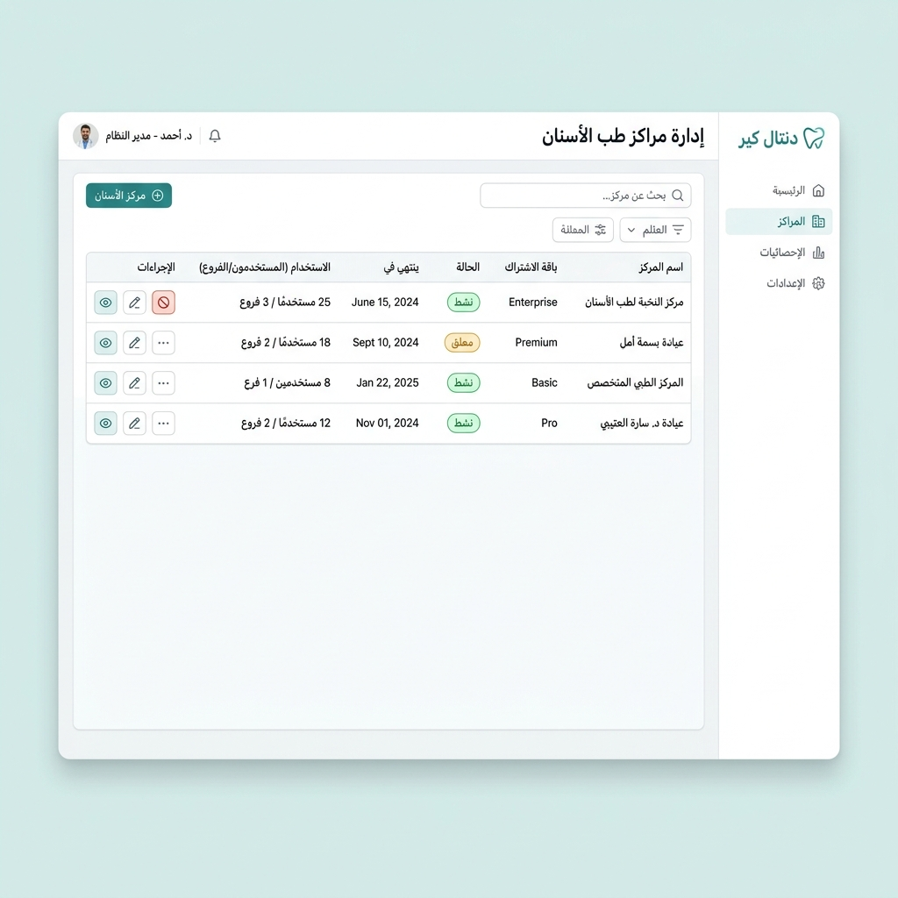
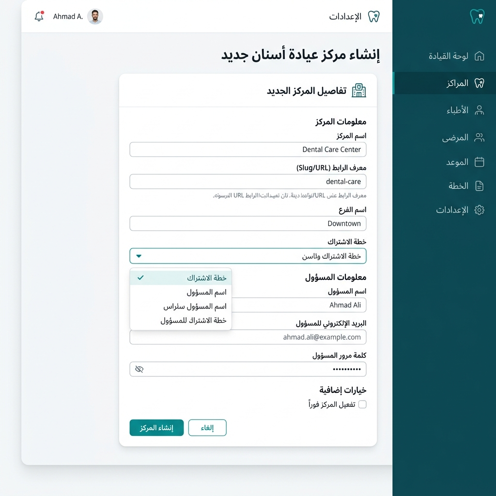
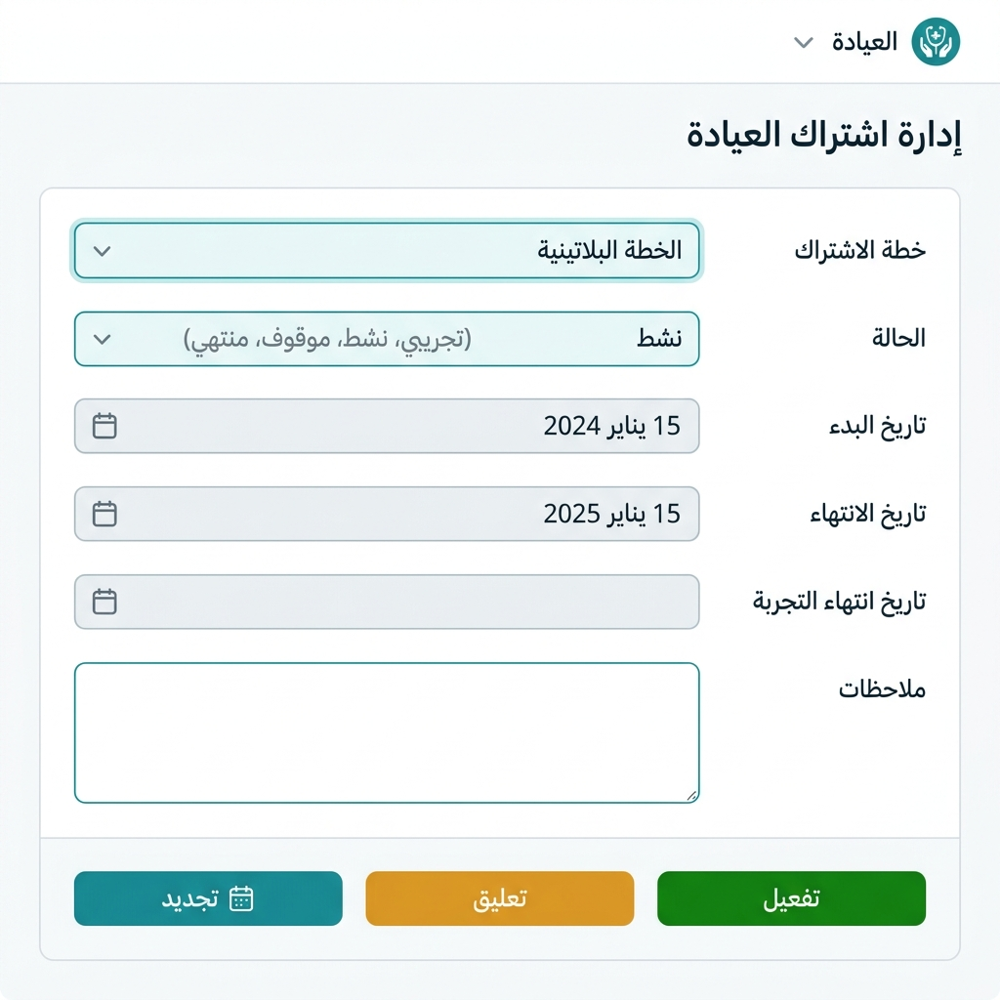
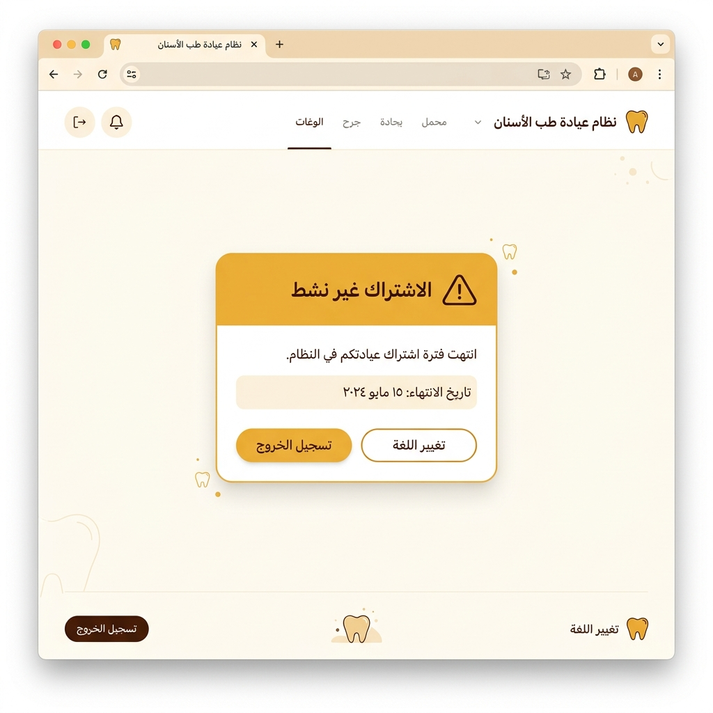

تم ترقية نظام ProDentic في هذا الإصدار ليصبح منصة SaaS (Software as a Service) متعددة المستأجرين (Multi-Tenant). هذا يعني أن نفس النظام يمكنه استضافة عدد غير محدود من العيادات والمراكز الطبية في آنٍ واحد، مع ضمان العزل التام لبيانات كل مركز.
| المستوى | يمثّل | مثال | يملك |
|---|---|---|---|
| مدير المنصة (Super Admin) | شركة تشغيل النظام | SoftNube | إنشاء المراكز + إدارة الاشتراكات |
| مركز (Center) | عيادة أو مستشفى | مركز النور الطبي | شعاره + موظفيه + إعداداته + اشتراكه |
| فرع (Branch) | موقع جغرافي للمركز | فرع صنعاء الأول | مرضاه + فواتيره + تسلسل أرقامه الخاص |
مدير المنصة هو حساب خاص منفصل تماماً عن حسابات مديري العيادات. عند تسجيله للدخول،
يُوجَّه مباشرةً إلى لوحة تحكم المنصة (/platform) بدلاً من لوحة عيادة معينة.
من قائمة المراكز يستطيع مدير المنصة رؤية جميع العيادات المسجلة في النظام دفعةً واحدة مع ملخّص لحالة كل منها.

| العمود | الوصف |
|---|---|
| المركز | اسم العيادة ورمزها التعريفي (slug) المستخدم في عناوين URL |
| الباقة | اسم باقة الاشتراك الحالية (Basic / Pro / Owner...) |
| الحالة | active نشط · trial تجريبي · suspended موقوف · expired منتهي |
| تاريخ الانتهاء | تاريخ انتهاء الاشتراك الحالي (أو «دائم» إذا كان بلا انتهاء) |
| الاستخدام | عدد المستخدمين والفروع المسجلين في هذا المركز |
| الإجراءات | رابط «إدارة الاشتراك» للذهاب إلى صفحة التجديد/التعديل |
بنقرة واحدة على زر «إنشاء مركز» يُفتح نموذج الإعداد الأولي (Onboarding). يقوم النظام تلقائياً بإنشاء كل ما يحتاجه المركز الجديد للعمل الفوري.

alnoor-clinic).
يحتوي على أحرف إنجليزية وأرقام وشرطات فقط، ولا يمكن تغييره لاحقاً.
admin الخاص بهذا المركزمن صفحة «إدارة الاشتراك» المرتبطة بكل مركز، يستطيع مدير المنصة تعديل كل جوانب الاشتراك: الباقة، والحالة، وتواريخ البداية والانتهاء والتجربة.

| الحقل | الوصف |
|---|---|
| الباقة (plan) | تحدد حدود عدد الأطباء، الفروع، المستخدمين، والموظفين المسموح بهم |
| الحالة (status) | trial تجريبي · active نشط · suspended موقوف · expired منتهي |
| تاريخ البداية (starts_at) | تاريخ بدء الاشتراك الحالي |
| تاريخ الانتهاء (ends_at) | تاريخ انتهاء الاشتراك. إذا تُرك فارغاً يعني الاشتراك دائم (لا ينتهي) |
| نهاية التجربة (trial_ends_at) | تاريخ انتهاء فترة التجربة المجانية |
| الملاحظات (notes) | ملاحظات داخلية عن الاشتراك (غير مرئية للعيادة) |
أسفل النموذج توجد ثلاثة أزرار للإجراءات السريعة:
عندما ينتهي اشتراك أحد المراكز أو يُعلَّق، يتم إعادة توجيه جميع مستخدمي ذلك المركز تلقائياً إلى صفحة الاشتراك المنتهي عند محاولة الدخول.

/platform وتجديد اشتراك المركز المعني
من خلال زر «تفعيل» أو «تجديد»، وسيعود الوصول فوراً.
تتيح الباقات (Plans) تحديد حدٍّ أقصى لعدد الموارد المتاحة لكل مركز. عند محاولة تجاوز هذه الحدود يمنع النظام الإضافة تلقائياً برسالة واضحة.
| المورد | وصف الحد | رسالة الخطأ |
|---|---|---|
| الأطباء (max_doctors) | عدد الأطباء النشطين (لا يشمل الموقوفين) | «تجاوزت الحد المسموح لعدد الأطباء في باقتك» |
| الفروع (max_branches) | عدد الفروع النشطة في المركز | «لا يمكن إضافة فرع جديد في باقتك الحالية» |
| المستخدمون (max_users) | عدد حسابات تسجيل الدخول | «وصلت إلى الحد الأقصى لعدد المستخدمين» |
| الموظفون (max_staff) | عدد موظفي الاستقبال والممرضين | «تجاوزت الحد المسموح لعدد الموظفين» |
يظهر في أعلى كل صفحة داخل النظام شريطٌ يعرض الاستخدام الحالي مقارنةً بحدود الباقة (مثال: «الأطباء: 4 من 5»)، ليذكّر المستخدم بالسعة المتبقية.
إذا كان المركز يمتلك أكثر من فرع، يمكن للمستخدمين المصرَّح لهم التبديل بين الفروع من قائمة الفروع الموجودة في شريط التنقل العلوي.
INV-2026-0001 وفرع عدن يبدأ أيضاً من INV-2026-0001
— بدون أي تداخل.
البنية الأمنية للنظام مصممة على مبدأ «الإغلاق عند الشك» (Fail-Closed): أي استعلام بدون مركز محدد لا يُرجع أي بيانات، بدلاً من إرجاع كل البيانات.
تم نقل جميع الملفات المرفوعة (صور المرضى، ملفات السجل الطبي، شعارات العيادات) إلى قرص خاص (Private Disk) بدلاً من القرص العام. هذا يعني أن هذه الملفات:
tenants/{id}/...).في الإصدار الجديد، لكل مستخدم مركز محدد يُقيَّد به. عند تسجيل دخوله، يتم ربطه تلقائياً بمركزه وفرعه الافتراضي.
عمليات التصدير الكبيرة (تقارير PDF و Excel) تعمل في الخلفية (Background Jobs). مع الإصدار الجديد، هذه العمليات تعمل ضمن سياق المركز والفرع الصحيح: